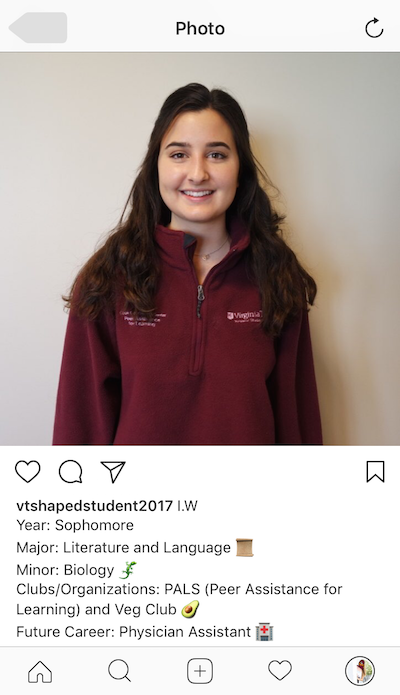
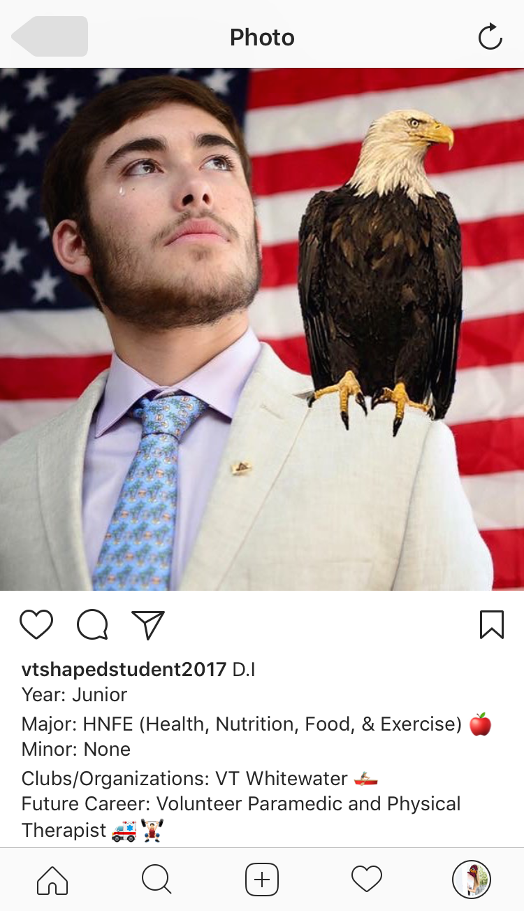
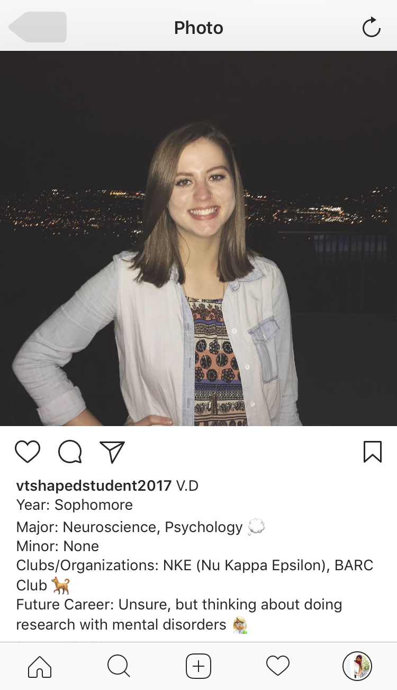
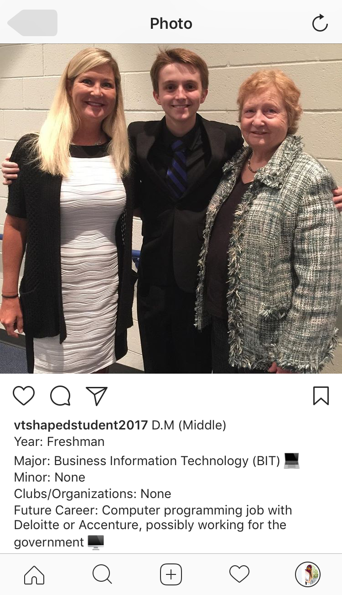

My Design
   Reflection
My main goal for this design is to spread awareness about the VT-Shaped student. Since this concept was only just put into circulation by the provost, I am well aware that anyone who goes to Virginia Tech who is not a current or upcoming freshman has no clue about what a VT-Shaped Student is. I like to think of myself as an advocate of the VT Shaped student because I am taking so many classes outside of my current major. Enough about me! I wanted to find a way to really get the concept of the VT Shaped student out there - and what better way to do so then to look to social media. Applications like Snapchat, Instagram, and Twitter are sources of constant updates on our lives - the perfect platform for putting our lives on display. Psychology has show that social media plays a huge role on how we view ourselves. For instance, most teenagers post as an idealized version of themselves, where they are fun and active. However, some accounts like Humans of Virginia Tech (HOVT) interview students about their experiences with both life and academics. For me, there is nothing worse than feeling alone in a school full of 30,000 people. When I learned that one of my friends, Indiana, was in the same major and future career situation that I was in, I felt like I belonged and that the world wasn't so scary. I wanted to incorporate these elements into my Instagram account called: VTShapedStudent2017.
VTShapedStudent2017 posts every Monday, Wednesday, and Friday. Every couple of weeks, a post will be made about someone who had recently done some community service, CO-OP, or study abroad opportunity. Within all of these posts, there is a picture of a student. With each student, only their initials will be included, for privacy. Along with their name, the caption will include their major and/or minors, clubs, organizations, and projected future career. By including this information, the students will be able to interact with and support one another through comments and direct messages (DMs). Not only will students be able to communicate with one another, it will also spread the message about the VT-Shaped Student. Given the rate at which things on the internet are spread to millions of people, it should take little to no time for the well-rounded Virginia Tech student to be acknowledged around campus, the state, and possibly the entire country. Above, I have included some examples of what the account and the posts would look like.